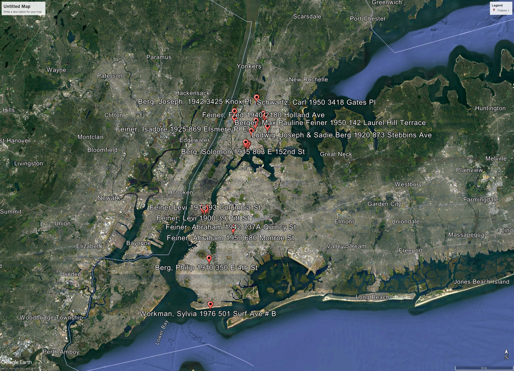

|
|
| 
Hyman WORKMAN (1892-1977) |
Hyman WORKMAN 51
Noted events in his life were: • Immigration, 1913, , , New York, USA. 100 • Census: New York State Census, 1 Jun 1915, New York City, , New York, USA. 101 • Residence, 5 Jun 1917, Bronx, Bronx Co., New York, USA. 102 • Employment: Cloak Operator, 5 Jun 1917, New York City, , New York, USA. 102 • Military: WWI Draft Registration, 5 Jun 1917, Bronx, Bronx Co., New York, USA. 102 • Census: 1920 Federal Census, 3 Jan 1920, Bronx, Bronx Co., New York, USA. 103 • Census, 1 Jun 1925, Bronx, Bronx Co., New York, USA. 100 • Naturalization, 18 Jun 1925, Bronx, Bronx Co., New York, USA. • Occupation: Dress operator, 2 Apr 1940, Bronx, Bronx Co., New York, USA. 104 • Census: 1940 Federal Census, 2 Apr 1940, Bronx, Bronx Co., New York, USA. 104 • Residence, 25 Apr 1944, Bronx, Bronx Co., New York, USA. 105 • Employment: J. Gordon 589 8th Ave, 25 Apr 1944, Bronx, Bronx Co., New York, USA. 105 • Military: WWII Draft Registration, 25 Apr 1944, Bronx, Bronx Co., New York, USA. 105 • Occupation, 17 Apr 1950, Bronx, Bronx Co., New York, USA. 106 • Census: 1950 Federal Census, 17 Apr 1950, Bronx, Bronx Co., New York, USA. 106,107 Hyman married Frieda SCHIFF, daughter of Reuven SCHIF and Tema, on 16 Dec 1916 in Manhattan, New York Co., New York, USA.97 (Frieda SCHIFF was born on 9 Jun 1895 in , , , Austria 100,108 and died in Oct 1984 in Manhattan, New York Co., New York, USA 108.) |
Search using Google Custom Search:
Table of Contents | Surnames | Name List
This website was created 11 Apr 2025 with Legacy 10.0, a division of MyHeritage.com; content copyrighted and maintained by coddgenealogy at gmail d0t com